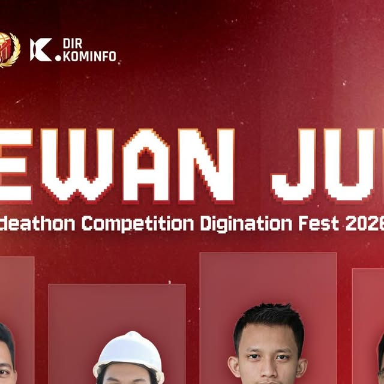
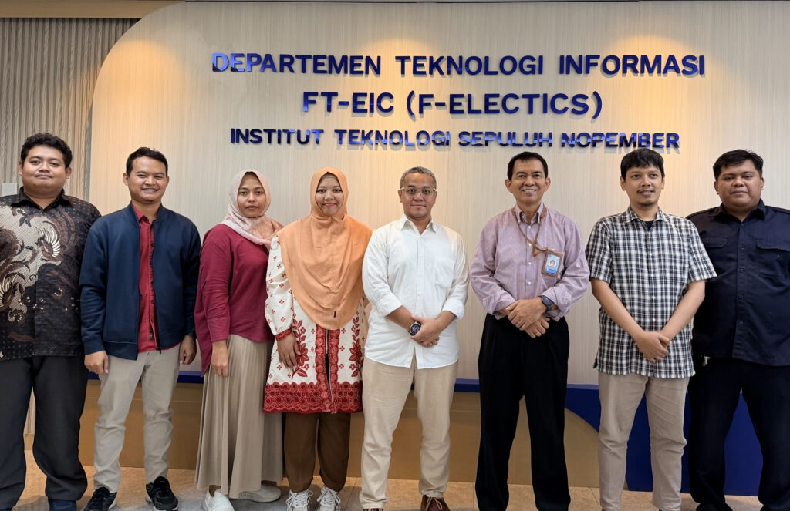
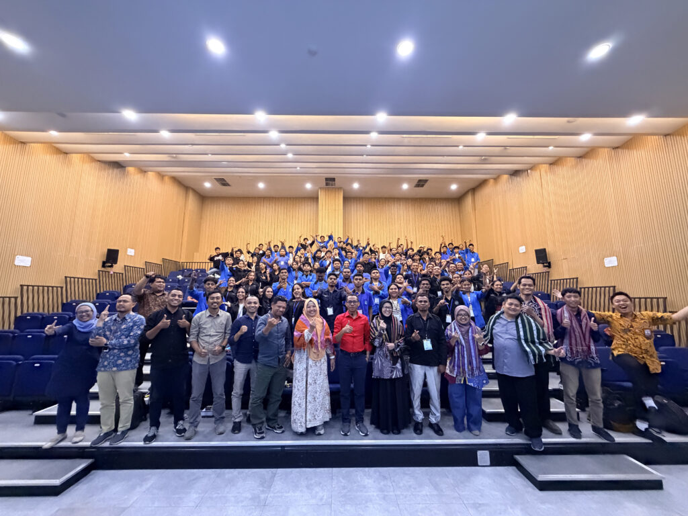
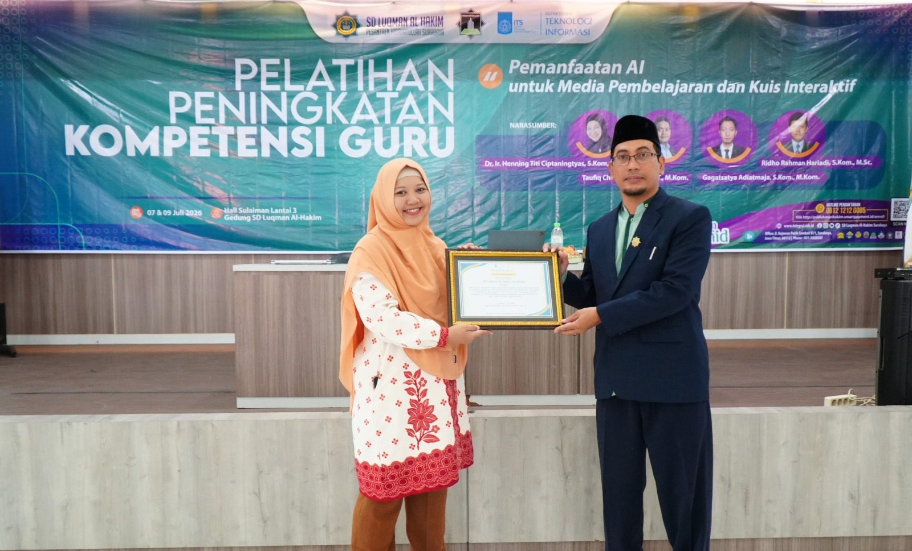
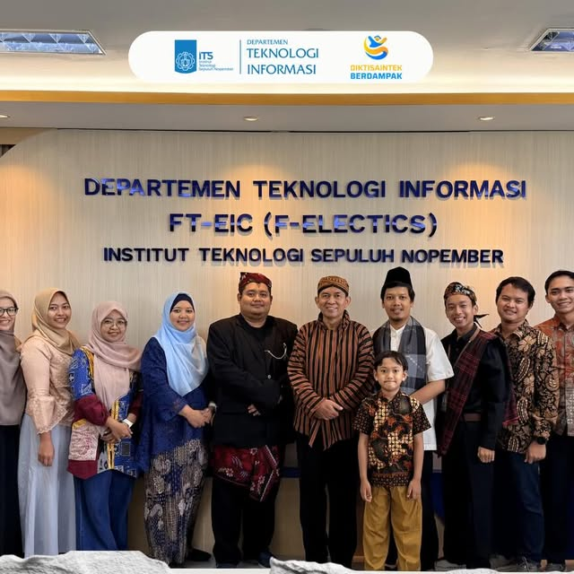

Rangkuman Profil
Taufiq Choirul Amri, S.Tr.T., M.Kom. adalah dosen di Departemen Teknologi Informasi, Institut Teknologi Sepuluh Nopember. Fokus riset pada pengolahan sinyal sensor, pengembangan elektronika, dan kecerdasan artifisial, dengan penerapan pada deteksi pencemaran lingkungan dan sistem sensor cerdas.
Pendidikan
Doktor, Ilmu Komputer
Institut Teknologi Sepuluh Nopember
Magister, Informatika
Institut Teknologi Sepuluh Nopember
Sarjana Terapan, Teknik Komputer
Politeknik Elektronika Negeri Surabaya
Mengajar
Mata kuliah yang diampu · 2024–2026
Publikasi
- 2026 Detecting water contaminants using an electrochemical sensor based on improved Transformer Encoder with Genetic Algorithm Journal of Water Process Engineering · DOI: 10.1016/j.jwpe.2026.110111
- 2026 Cross-Attention Feature Fusion network for robust estimation of Cd²⁺ and Pb²⁺ in water samples using Cyclic Voltammetry Chemical Engineering Journal Advances · DOI: 10.1016/j.ceja.2026.101065
- 2025 Augmented Data Low Confidence (ADLC): A Confidence-Driven Data Augmentation Framework With Ensemble Optimization IEEE Access · DOI: 10.1109/ACCESS.2025.3636729
- 2025 Metaheuristic Optimized Machine Learning for Real Time Ammonia Prediction in IoT Based POME Bioremediation Systems BTS-I2C 2025 · DOI: 10.1109/BTS-I2C67944.2025.11399329
- 2025 ADASYN-GRU Approach for Enhanced Detection of Heavy Metals in Water Using Electrochemical Sensors ICoCSETI 2025 · DOI: 10.1109/ICoCSETI63724.2025.11018884
Daftar lengkap & sitasi di Google Scholar.
Penelitian
Detektor Cemaran Logam Berat dalam Air
Institut Teknologi Sepuluh Nopember · Paper, HKI, Prototype
Electronic Tongue · Mikroplastik Sungai Kalimas
Pertamina Foundation · Paper
Electronic Nose · Kualitas Minyak Goreng Sawit
HETI ADB · Prototype, HKI, Paten
Penghargaan & Hak Cipta
- Pertamina Foundation SAINS 2024/2025 · Pertamina
Portofolio & Liputan

Juri Ideathon · DigiNation Fest 2026
Menjadi salah satu juri kompetisi ideathon bidang IoT/teknologi bersama praktisi industri.
Lihat postingan →
Tata Kelola Cloud Lewat COBIT
Kuliah tamu bersama Presiden ISACA Indonesia membahas internal control & peluang profesi cloud governance.
Baca berita →
Kolaborasi Internasional dengan Dili Institute of Technology
Workshop Advanced Coding & AI untuk 100 mahasiswa DIT, Timor-Leste.
Baca berita →
Pelatihan AI untuk Guru SD Luqman Al Hakim
Pelatihan pemanfaatan AI untuk media pembelajaran & kuis interaktif bagi guru sekolah dasar.
Baca berita →
Kegiatan Departemen Teknologi Informasi
Dokumentasi kegiatan & kontribusi di Departemen Teknologi Informasi ITS.
Lihat postingan →